HaoTian · 2024-12-10 11:12:28
今天，我们来看这么一个非常常见的切图场景，我们需要一个带圆角的虚线边框，像是这样：
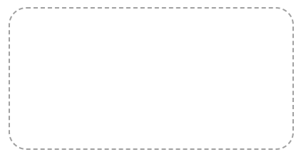这个我们使用 CSS 还是可以轻松解决的，代码也很简单，核心代码：
div {
border-radius: 25px;
border: 2px dashed #aaa;
}
但是，原生的 dashed 有一个问题，就是我们无法控制虚线的单段长度与间隙。
假设，我们要这么一个效果呢虚线效果呢：
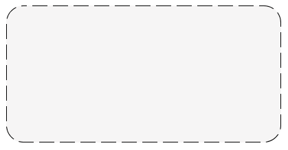此时，由于无法控制 border: 2px dashed #aaa 产生的虚线的单段长度与线段之间的间隙，border 方案就不再适用了。
那么，在 CSS 中，我们还有其它方式能够实现带圆角，且虚线的单段长度与线段之间间隙可控的方式吗？
本文，我们就一起探讨探讨。
上面的场景，使用 CSS 实现起来比较麻烦的地方在于，图形有一个 border-radius。
如果不带圆角，我们可以使用渐变，很容易的模拟虚线效果。
我们可以使用线性渐变，轻松的模拟虚线的效果：
div {
width: 150px;
height: 100px;
background: linear-gradient(90deg, #333 50%, transparent 0) repeat-x;
background-size: 4px 1px;
background-position: 0 0;
}
看看，使用渐变模拟的虚线如下：
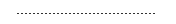解释一下上面的代码：
因此，我们只需要修改 background 的参数，就可以得到各种不一样的虚线效果：
完整的代码，你可以戳这里：CodePen Demo -- Linear-gradient Dashed Effect
并且，渐变是支持多重渐变的，因此，我们把容器的 4 个边都用渐变表示即可：
div {
background: linear-gradient(90deg, #333 50%, transparent 0) repeat-x, linear-gradient(
90deg,
#333 50%,
transparent 0
) repeat-x, linear-gradient(0deg, #333 50%, transparent 0) repeat-y, linear-gradient(
0deg,
#333 50%,
transparent 0
) repeat-y;
background-size: 4px 1px, 4px 1px, 1px 4px, 1px 4px;
background-position: 0 0, 0 100%, 0 0, 100% 0;
}
效果如下：
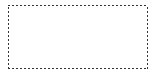但是，如果要求的元素带 border-radius 圆角，这个方法就不好使了，整个效果就会穿帮。
因此，在有圆角的情况下，我们就需要另辟蹊径。
当然，本质上我们还是需要借助渐变效果，只是，我们需要转换一下思路。
譬如，我们可以使用角向渐变。
假设，我们有这么一个带圆角的元素：
<div></div>
div {
width: 300px;
height: 200px;
background: #eee;
border-radius: 20px;
}
效果如下：
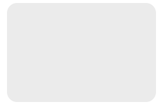如果我们修改内部的 background: #eee，把它替换成重复角向渐变的这么一个图形：
div {
//...
- background: #eee;
+ background: repeating-conic-gradient(#000, #000 3deg, transparent 3deg, transparent 6deg);
}
解释一下，这段代码创建了一个重复的角向渐变背景，从黑色（#000）开始，每 3deg 变为透明，然后再从透明到黑色，以此循环重复。
此时，这样的背景效果可用于创建一种渐变黑色到透明的重复纹理效果：
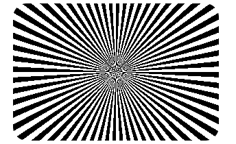在这个基础上，我们只需要给这个图形上层，再利用伪元素，叠加一层颜色，就得到了我们想要的边框效果，并且，边框间隙和大小可以简单调整。
完整的代码：
div {
position: relative;
width: 300px;
height: 200px;
border-radius: 20px;
background: repeating-conic-gradient(
#000,
#000 3deg,
transparent 3deg,
transparent 6deg
);
&::before {
content: "";
position: absolute;
inset: 1px;
background: #eee;
border-radius: 20px;
}
}
效果如下：
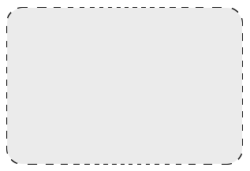乍一看，效果还不错。但是如果仔细观察，会发现有一个致命问题：虚线线段的每一截长度不一致。
只有当图形的高宽一致时，线段长度才会一致。高宽比越远离 1，差异则越大：
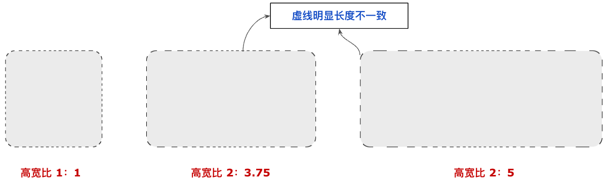完整的代码，你可以戳这里：CodePen Demo -- BorderRadius Dashed Border
那有没有办法让虚线长度能够保持一样呢？
可以！我们再换一种渐变，我们改造一下底下的角向渐变，重新利用重复线性渐变：
div {
border-radius: 20px;
background: repeating-linear-gradient(
-45deg,
#000 0,
#000 7px,
transparent 7px,
transparent 10px
);
}
此时，我们能得到这样一个斜 45° 的重复线性渐变图形：
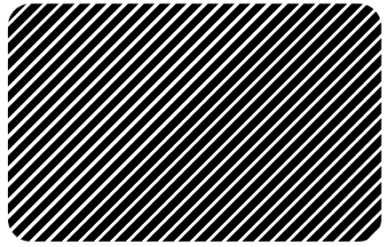与上面方法一类似，再通过在这个图形的基础上，在元素中心，叠加多一层纯色遮罩图形，只漏出最外围一圈的图形，带圆角的虚线边框就实现了：
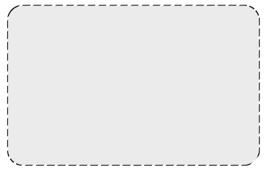此方法比上面第一种渐变方法更好之处在于，虚线每一条线段的长度是固定的！是不是非常的巧妙？
完整的代码，你可以戳这里：CodePen Demo -- BorderRadius Dashed Border
当然，上面使用 CSS 实现带圆角的虚线边框，还是需要一定的 CSS 功底。
并且，不管是哪个方法，都存在一定的瑕疵。譬如如果希望边框中间不是背景色，而是镂空的，上述两种 CSS 方式都将不再使用。
因此，对于带圆角的虚线边框场景，最佳方式一定是 SVG。（切图也算是吧，但是灵活度太低）
只是很多人看到 SVG 会天然的感到抗拒，或者认为 SVG 不太好掌握。
所以，本文再介绍一个非常有用的开源工具 -- Customize your CSS Border：
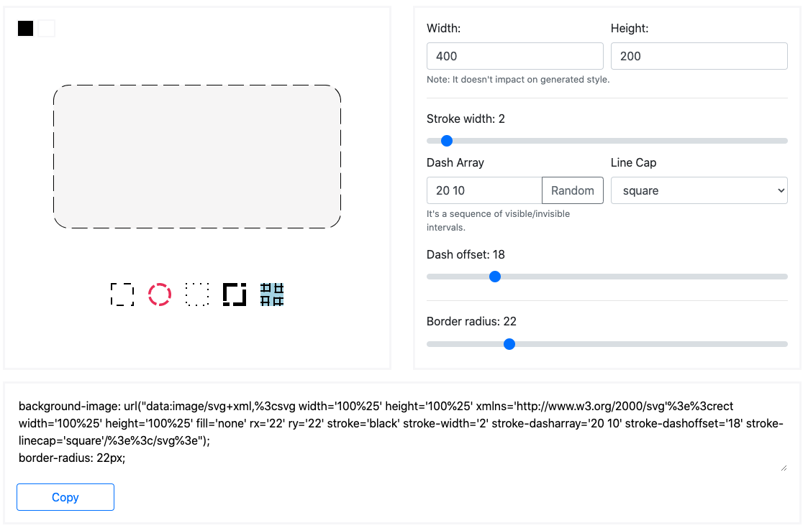通过这个开源工具，我们可以快速生成我们想要的虚线边框效果，并且一键复制可以嵌入到 CSS background 中的 SVG 图片格式。
图形的大小、边框的粗细、虚线的线宽与间距，圆角大小统统是可以可视化调整的。
通过一个动图，简单感受一下：
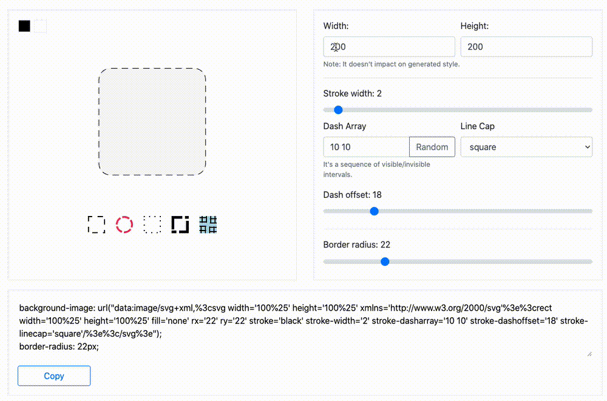本文介绍了 2 种在 CSS 中，不借助切图和 SVG 实现带圆角的虚线边框的方式：
当然，两种 CSS 方式都存在一定瑕疵，但是对于一些简单场景是能够 Cover 住的。
最后，介绍了借助 SVG 工具 Customize your CSS Border 快速生成带圆角的虚线边框的方式。将 SVG 生成的矢量图像数据直接嵌入到 background URL 中，能够应付几乎所有场景，相对而言是更好的选择。